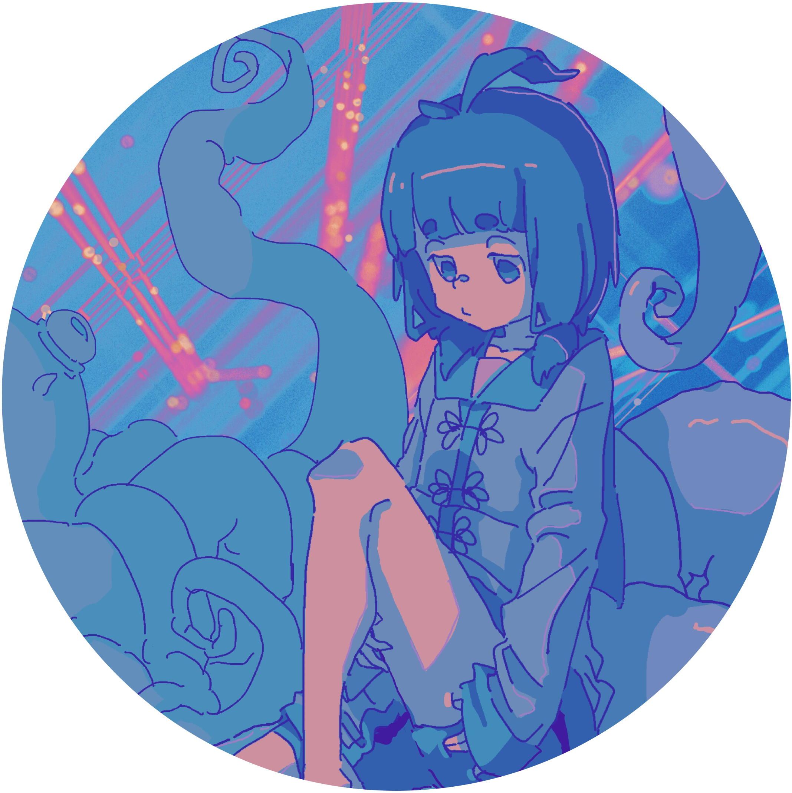

profile

楽曲の作詞・作曲・編曲・歌唱・Gt・アートワークなど広く手掛けるシンガーソングクリエイター。
楽曲に感じられるロック・ポップ・キャッチーなメロディーと幻想的なサウンドは、新世代の流れを汲んだオリジナリティ溢れる世界観を創出する。 すべての作品は“弱さを昇華させる強くて儚いエモーショナルなサウンド“を根本に、自身のサウンドを日々追い続ける。
2014年から2022年12月までは3ピースオルタナティブロックバンド“しらぬい“のVo/Gtとして活動。
現在は東京を拠点に、"yoki_陽紀"としてネットを中心に活動再開。
biography
| 2014 | |
| 4 | へて春雨結成 |
| 6 | Teens Booster 2014 ファイナル出場 |
| 8 | The 8th Music revolution 西日本大会 セミファイナル出場2015 |
| 2015 | |
| 3 | しらぬいに 改名 |
| 7 | TANK! THE AUDITION 2015 本選出場審査員特別賞受賞 |
| 10 | The 9th music revolution 名古屋ファイナル出場 |
| 2016 | |
| 3 | 1st single"aoi瞬間"会場限定release |
| 新栄APOLLO BASE 1st single「aoi瞬間」release party | |
| 2017 | |
| 2 | 僕らで夏フェス」新栄APOLLO BASE 2マンLIVE |
| 8 | aoi瞬間」PCゲーム〝マミヤ″ のオープニングに起用される。iTunes storeにて「aoi瞬間」ダウンロード開始 |
| 2018 | 2 | RO JACK for ROCK IN JAPAN FESTIVAL 2018 入賞 |
| 6 | MASH A&R 6月のマンスリーアーティストに選出 |
| 2019 | |
| 1 | 『phase shift』music video公開 |
| 3 | ZiP-FM FIND OUTの3月の”MONTHLY CLOSER”に選出 |
| 11 | しらぬい×Shift Control Split EP Release Tour～蒼白に染める月と陽～開催 |
| 12 | 1st shingle”ai瞬間” split EP”phase shift”サブスクで配信開始。 『Hikari』music video公開 しらぬい自主企画"FRAGMENTS #1"開催 |
| 2020 | |
| 3 | しらぬい 1st EP”NEO”release 決定 |
| 10 | 『H E R O』music video公開 |
| 2021 | |
| 9 | 「white room」名古屋 ell.SIZE 2マンLIVE |
| 10 | 2nd shingle"paradigm"release |
| 11 | 2nd shingle paradigm release tour開催 |